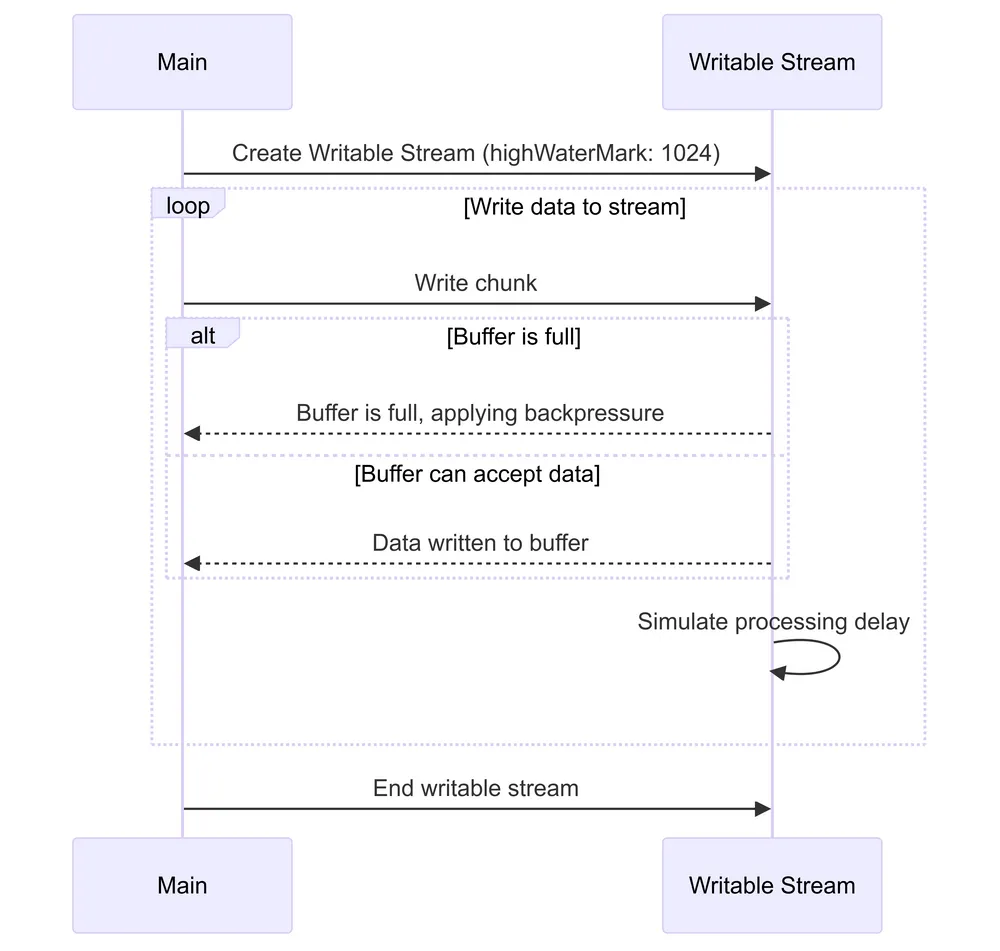
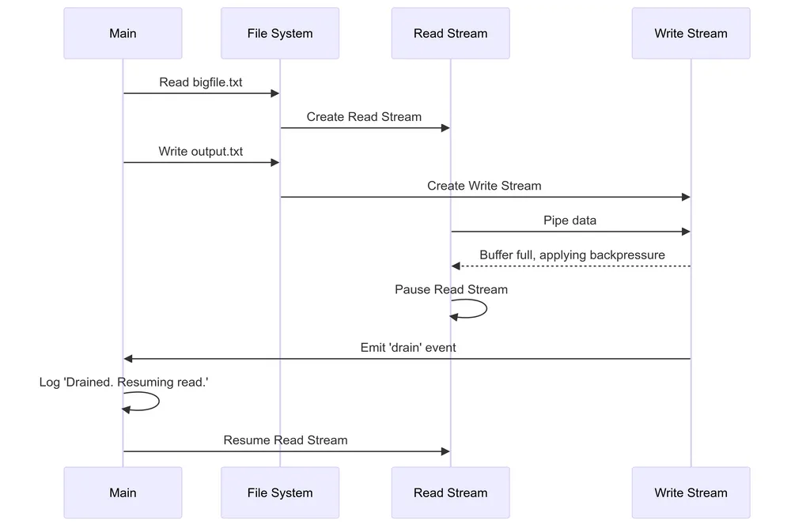
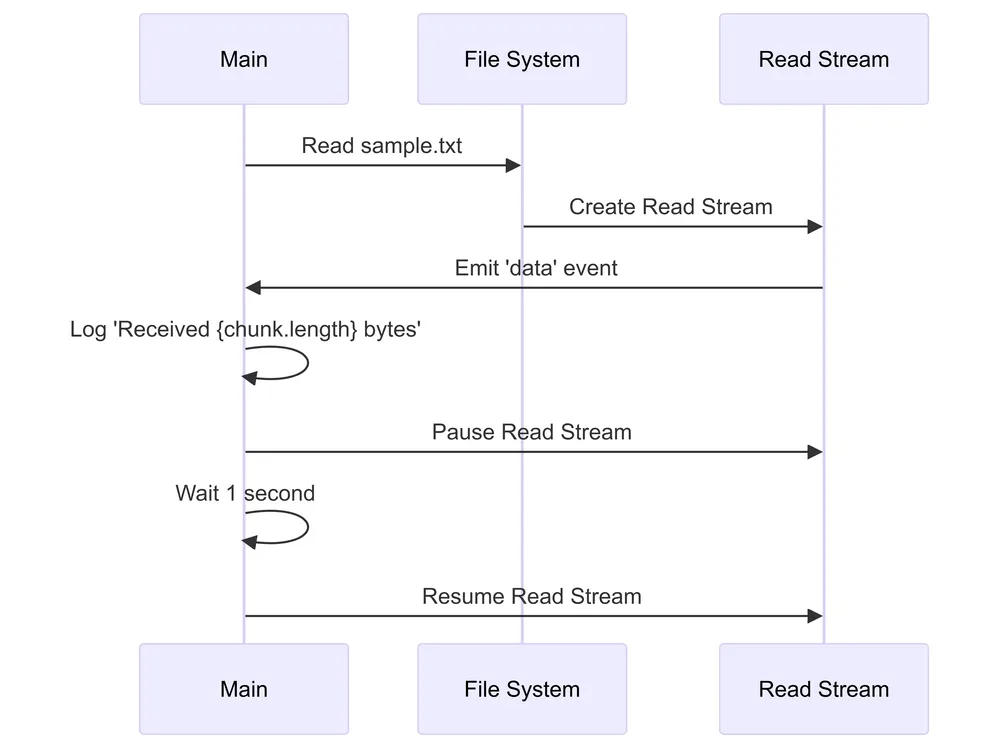
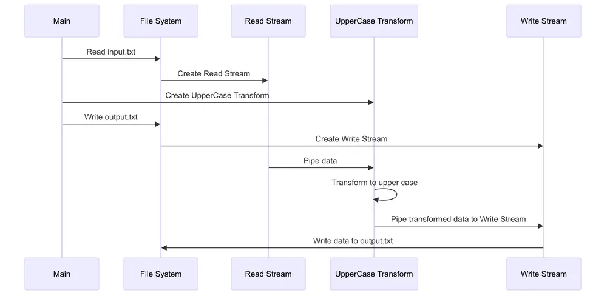
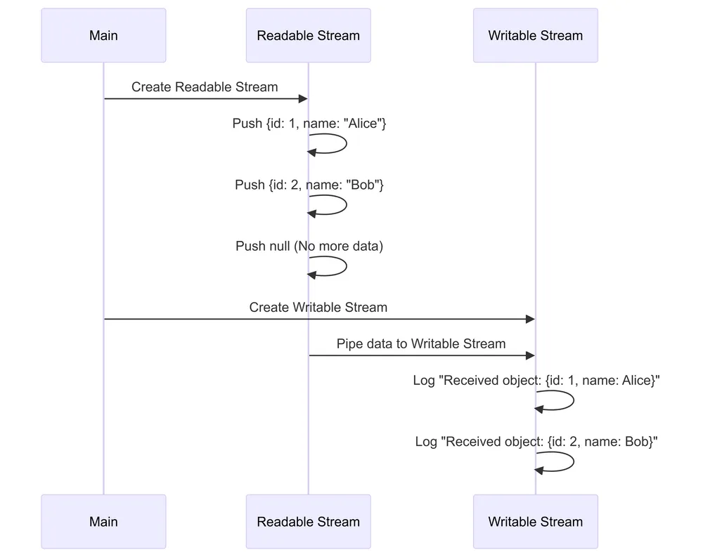

repost: Understanding Node.js Streams - Dennis O’Keeffe
# Overview
Streams can be a less approachable topic for those working with Node.js.
Within Node.js, there are four fundamental stream types that exist:
- Writeable: Streams that you can write data to.
- Readable: Streams that you can read data from.
- Duplex: Streams that are both readable and writeable.
- Transform: A type of Duplex stream that can modify or transform the data as it is written and read.
Over the course of this post, we will working through the fundamentals that you should understand about Node.js streams and why they exist.
In this post, we will not deep dive into each of the four stream types. Even though I will be introducing stream code in this blog post, we specifically will focus on the foundational concepts that you should understand about streams. In the posts following, will consolidate our knowledge by diving deeper into each stream type.
How to think about the four fundamental Node.js Stream types
To help you understand the four stream types, I will introduce four analogies to think about each stream type orientated around water so that you connect the dots between the four types, but I will also add an alternative analogy to help consolidate your mental model of the four fundamental stream types. These aim to help bridge the gap between the abstract concept of streams and something more tangible.
# 1. Writable Streams: The Water Bucket, The Notebook
Writable streams are like water buckets that collect data (water). Just as a bucket can be filled with water from various sources, a writable stream can receive data from different inputs. You can pour data into it chunk by chunk, and it will hold that data until it’s full or you’re done writing. This makes writable streams perfect for scenarios where you need to collect and store data, such as writing to files or sending responses in a web server.
A water bucket can be used to think about Writeable Streams in Node.js
Alternatively, you could think of Writable streams are like a notebook where you can write information. Just as you can open a notebook and jot down thoughts, ideas, or data page by page, a writable stream allows you to input data chunk by chunk. You control when to write, how much to write, and when you’re finished.
Examples of Writable streams include:
- File Writing: Writing data to a file using
fs.createWriteStream(). - HTTP Responses: Sending responses to clients in a web server.
- Database Inserts: Streaming large amounts of data into a database.
- Console Output: Writing to
process.stdoutfor command-line applications.
A simple example of creating a writable stream to a file output.txt in Node.js and writing in the text Hello, World!:
1 | const fs = require("node:fs"); |
# 2. Readable Streams: The Tap, The Fantasy Novel
Readable streams can be thought of as water taps. Like a tap that can be turned on to release a steady flow of water, a readable stream provides a controlled source of data. You can “open” the stream to start receiving data, control its flow, and “close” it when you’re done. This makes readable streams ideal for scenarios where you have a source of data that you want to access and process at your own pace, such as reading from a file or receiving a response from an HTTP request. Just as you can adjust a tap to control the water flow, you can also manage how you consume data from a readable stream.

A water tap can be used to think about Readable Streams in Node.js
You could also think about a fantasy novel (or in fact, any published book that you read). As you flip through the pages, you’re consuming the story bit by bit, much like how a readable stream provides data in chunks. You can pause your reading (pause the stream), continue where you left off (resume the stream), or decide you’re done reading for now (end the stream).
Examples of Readable streams include:
- File Reading: Reading data from a file using
fs.createReadStream(). - HTTP Requests: Receiving data from client requests in a web server.
- Database Queries: Streaming large result sets from a database.
- User Input: Reading from
process.stdinfor command-line interfaces.
An example of creating a readable stream from a file input.txt in Node.js:
1 | const fs = require("node:fs"); |
# 3. Duplex Streams: The Two-Way Water Pipe, The Walkie-Talkie
Duplex streams are like two-way water pipes. Imagine a pipe system where water can flow in both directions simultaneously. One end of the pipe can receive water (write data), while the other end can release water (read data). This bidirectional flow makes duplex streams perfect for scenarios where you need to both send and receive data, such as in network sockets or inter-process communication.
A two-way pipe can be used to think about Readable Streams in Node.js
A two-way pipe can be used to think about Readable Streams in Node.js
Admittedly for me, Duplex streams were the ones that took me more time to understand. My alternative is that Duplex streams are akin to a walkie-talkie. With a walkie-talkie, you can both speak (write data) and listen (read data) through the same device. Similarly, a duplex stream can both accept input and provide output, making it perfect for two-way communication scenarios.
Examples of Duplex streams include:
- TCP Sockets: Implementing network communication where data flows both ways.
- SSH Tunnels: Establishing secure, bidirectional communication channels.
- Websockets: Creating real-time, full-duplex communication in web applications.
- Inter-process Communication: Facilitating two-way communication between processes.
An example of creating a duplex stream using a TCP server in Node.js by creating a server that listens on port 8080 :
1 | const net = require("node:net"); |
In the above code, we have a socket variable that is a duplex stream. We write to the socket using socket.write() and read from the socket using socket.on("data", ...) .
# 4. Transform Streams: The Water Treatment Plant, The Factory Assembly Line
Transform streams you can think of as water treatment plants. Just as a treatment plant takes in raw water, processes it, and outputs clean water, a transform stream receives input data, manipulates or “transforms” it in some way, and then outputs the modified data. This makes transform streams excellent for scenarios where you need to modify data on the fly, such as compression, encryption, or any kind of data parsing or conversion.

A water treatment plant can be used to think about Transform Streams in Node.js
Transform streams can be likened to a factory assembly line. In a factory, raw materials enter at one end, undergo various modifications or enhancements as they move along the line, and emerge as finished products at the other end. Similarly, a transform stream takes input data, processes or modifies it in some way, and outputs the transformed data.
Examples of Transform streams include:
- Data Compression: Compressing or decompressing data on-the-fly.
- Encryption/Decryption: Securing data as it’s being transmitted.
- Data Parsing: Converting between data formats (e.g., CSV to JSON).
- Text Encoding: Changing character encodings of text data.
Here is a simple example of a transform stream that converts input text to uppercase:
1 | const { Transform } = require("node:stream"); |
We could run the following in the terminal to see it in action:
1 | $ echo "Hello" | node basic-transform.js |
# Understanding the difference between Duplex and Transform streams
Transform streams are actually a special type of duplex stream. They can be thought of as duplex streams with a built-in relationship between the input and output. Using out analogy of the factory line or the water treatment plant, we understand that the input and output are related in some way. For Transform streams, data that comes in can be changed in some way before it goes out.
On the other hand, Duplex streams are more general. They can be used for two-way communication, but the input and output are not necessarily related. You can write data in one format and read it in another, or vice versa. In our example of the walkie talkie, what you talk about and what you hear are not necessarily directly related.
The “why” behind Node.js Streams
Node.js streams offer several benefits that make them a powerful tool for data processing and manipulation. Here are some key advantages of using streams in Node.js applications:
- Memory Efficiency
- Process large amounts of data without loading it all into memory at once.
- Ideal for working with files or datasets larger than available Random Access Memory (RAM).
- Time Efficiency
- Start processing data as soon as it’s available, without waiting for the entire dataset.
- Reduces overall processing time for large datasets.
- Composability
- Easily chain multiple stream operations together using
.pipe(). - Create complex data processing pipelines with modular, reusable components.
- Easily chain multiple stream operations together using
- Backpressure Handling
- Built-in mechanisms to manage the flow of data between fast producers and slow consumers.
- Prevents memory overflow and system crashes.
- Abstraction of Data Sources and Destinations
- Consistent interface for various types of input/output (files, network, etc.).
- Write code that works with different data sources without major changes.
- Event-Driven Architecture
- Aligns well with Node.js’s event-driven, non-blocking I/O model.
- Enables responsive applications even when dealing with large datasets.
- Built-in to Core Modules
- Native support in many Node.js core modules (
fs,http,crypto, etc.). - Seamless integration with Node.js ecosystem.
- Native support in many Node.js core modules (
- Asynchronous Processing
- Natural fit for asynchronous operations, allowing for efficient multitasking.
- Keeps the event loop free for other operations.
- Transformations
- Easy to implement data transformations on-the-fly.
- Supports operations like compression, encryption, or format conversion as data flows.
- Improved Performance in Network Operations
- Efficient for sending and receiving data over networks.
- Reduces latency in client-server communications.
- Customizability
- Can create custom streams for specific use cases.
- Extend built-in stream classes for tailored functionality.
- Interoperability
- Works well with other Node.js features and third-party libraries.
- Many npm packages provide stream interfaces for various data sources and sinks.
- Lazy Evaluation
- Process data only when it’s needed, improving application responsiveness.
- Useful for scenarios where not all data may be used.
- Standard Interface
- Provides a consistent API across different types of streams.
- Reduces the learning curve for working with various data sources and sinks.
These benefits make Node.js streams a powerful tool for efficient, scalable, and flexible data handling in a wide range of applications.
Node.js Streams concepts that you should know
On top of the four fundamental stream types, it is important to keep in mind a few foundational key terms that relate to streams:
- Stream types: The already-mentioned four foundational stream types (Writeable, Readable, Duplex, and Transform).
- Buffering: Temporary data storage within streams, controlled by
highWaterMarkto manage memory usage. - Backpressure: Mechanism to balance data flow between fast producers and slow consumers, preventing memory issues.
- Modes of Operation: Flowing (automatic data reading) vs Paused (manual data reading) modes for controlling data consumption.
- Piping: Connecting streams to automatically manage data flow and backpressure between them.
- Events: Asynchronous notifications for stream states and data availability, crucial for stream interaction.
- Object Mode: An option with streams that enable the capability to process JavaScript objects instead of just buffers or strings.
Understanding these concepts provides a solid foundation for working with Node.js streams effectively. It helps in making informed decisions about stream usage, handling data efficiently, and avoiding common pitfalls in stream-based applications.
Let’s walk through each of these concepts in more detail.
Buffering
Buffering in Node.js streams refers to the process of storing chunks of data in memory while they are being transferred between the source and the destination.
You can think of it like a queue of people waiting to enter a room. The room can only hold a certain number of people at a time, so the manager at the front of the queue (buffer) helps manage the flow of people in and out of the room.

A queue of people can be an analogy for both buffering and backpressure
When data is read from a stream, it is held temporarily in a buffer until it can be processed or written to another stream. It is a mechanism used by streams to manage data flow efficiently.
We can help example buffering by creating a writable stream with a custom highWaterMark .
1 | const { Writable } = require("node:stream"); |
- Create a writable stream with a 1KB buffer.
- Write data to the stream.
- If more than 1KB of data is written before it’s processed, the write method will return
false, indicating the buffer is full.
Here is a more detailed example:
1 | const { Writable } = require("node:stream"); |
In the above examples, when you call the write method of the writable stream, the data is added to the internal buffer. If the buffer is not full, the write method will immediately process the chunk. If the buffer is full, the stream will handle the backpressure by signaling the source to slow down or stop sending data until there’s enough space in the buffer.

Sequence diagram for our buffering example
Setting the highWaterMark value does not reject chunks smaller than the specified buffer size. Instead, it determines the maximum amount of data that the internal buffer can hold before applying backpressure. I sometimes think of the highWaterMark as a set of go/stop traffic lights.
Backpressure
We touched briefly above on backpressure, but what is it exactly?
Backpressure is a flow control mechanism. It is used in streams to manage the rate at which data is transmitted from the source (producer) to the destination (consumer).
Let’s continue with our analogy of the queue of people wanting to enter the room. When the room reaches its capacity (buffer is full), the manager stops allowing more people to enter. This is akin to the writable stream applying backpressure because it cannot handle more data at the moment.
It prevents the destination from being overwhelmed by data when it cannot process incoming data as quickly as it is being produced. In the context of Node.js streams, backpressure helps ensure efficient and stable data transfer, preventing memory overflow and maintaining application performance.
For another example, here demonstrate handling backpressure in a pipe operation:
1 | const fs = require("node:fs"); |
- Create read and write streams.
- Pipe data from read to write stream.
- If
writeStream's buffer fills up, it emits ‘drain’ event. - When ‘drain’ occurs, resume reading to manage backpressure.
Backpressure is managed implicitly by the pipe method, which connects the readable stream ( readStream ) to the writable stream ( writeStream ). The pipe method automatically handles the flow control, including backpressure, so you don’t need to manually manage it.
When the drain event is emitted, the writeStream signals that it has processed enough data to make room in its buffer. The readStream then resumes reading data and continues the flow.

Sequence diagram for our backpressure example
The two reading modes: Flowing and Paused
Node.js streams can operate in two reading modes: flowing and paused. These modes are separate from object mode (that we will touch on later) and determines how data is read from a readable stream.
- In flowing mode, data is read automatically from the stream and emitted as soon as it’s available. This mode is suitable for scenarios where you want to consume data as it arrives, such as real-time data processing or streaming media.
- In paused mode, data is read manually by calling the
read()method. This mode is useful when you need more control over data consumption, such as processing data in batches or pausing and resuming data flow.
In the following example, we switch between flowing and paused modes.
1 | const fs = require("node:fs"); |
- Create a readable stream in flowing mode.
- Receive data chunks automatically.
- Pause the stream, switching to paused mode.
- After a delay, resume the stream, switching back to flowing mode.

Sequence diagram for our flowing mode example
Here is a more specific example of flowing mode:
1 | const fs = require("node:fs"); |
While here is a more specific example of paused mode:
1 | const fs = require("node:fs"); |
In this scenario, we start in paused mode by listening for the readable event. We then manually read data chunks using the read() method and process them one by one.
Piping
Piping in Node.js streams refers to the process of connecting a readable stream to a writable stream, allowing data to flow automatically from the source (readable stream) to the destination (writable stream). This mechanism simplifies data transfer and handling, making it easy to implement common data processing tasks, such as file copying, HTTP request handling, and more.
1 | const fs = require("node:fs"); |
- Create read, transform, and write streams.
- Pipe data from read stream through transform stream to write stream.
- Data flows automatically, with backpressure handled by Node.js.

Sequence diagram for our piping example
A pipeline can be created by chaining multiple streams together using the .pipe() method or using the pipeline function from the node:stream module. This allows you to create complex data processing workflows with minimal code and effort.
Here is an example using the .pipe() method to create a pipeline:
1 | const fs = require("node:fs"); |
Here is the alternative using pipeline :
1 | const { pipeline } = require("node:stream"); |
Events
Events refer to the various events that streams can emit during their lifecycle. These events allow you to handle different stages and aspects of data processing, such as when data is available, when the stream ends, or when an error occurs.
Under the hood, streams in Node.js can emit events because they are instances of the EventEmitter class (which I may retroactively touch on more in depth in a future blog post).
Different types of streams emit different events, but we will highlight some of the more common events that you can listen for in Node.js streams.
# Readable
- data: Emitted when a chunk of data is available to be read.
- end: Emitted when there is no more data to be read from the stream.
- error: Emitted when an error occurs while reading data.
- readable: Emitted when the stream has data available to be read. This event is used in paused mode to indicate that you can call
read()to get more data.
# Writeable
- drain: Emitted when the writable stream’s internal buffer is emptied and it is ready to receive more data. This is important for handling backpressure.
- finish: Emitted when the
end()method is called and all data has been flushed to the underlying system. - error: Emitted when an error occurs while writing data.
# Stream Events in action
The following is an simple example of hooking to events on a readable stream.
1 | const fs = require("node:fs"); |
- Create a readable stream.
- Set up event listeners for various stream states.
- Events fire asynchronously as the stream operates.
- ‘open’ event when file is opened, ‘data’ for each chunk, ‘end’ when all data is read, ‘close’ when stream closes.
For a more complex example demonstrating more event types, you can refer to the following:
1 | const fs = require("node:fs"); |
The above hooks into some events for the different streams in the pipeline. This allows you to monitor the progress of the data processing, handle errors, and respond to various stream states.
Object Mode
All streams created by Node.js APIs operate exclusively with strings or Buffer , TypedArray or DataView objects.
Object mode however enables streams to work with other types of JavaScript object values.
In the following, we set objectMode to true in order to process JavaScript objects.
1 | const { Transform } = require("node:stream"); |
- Create a transform stream in object mode.
- Pipe stdin (buffer mode) to the transform stream.
- Transform converts Buffer chunks to JavaScript objects.
- Output stream receives and logs JavaScript objects.
There are trade-offs for using objectMode as it can impact performance overhead, backpressure handling, buffering constraints and serialization requirements.
Here is another example to more clearly demonstrate the use of objectMode between a readable and writeable stream:
1 | const { Readable, Writable } = require("node:stream"); |
- Create a readable stream that emits JavaScript objects.
- Create a writable stream that receives and logs objects.
- Pipe the readable stream to the writable stream.

Sequence diagram for our object mode example
Conclusion
Understanding Node.js streams is crucial for efficient data handling and manipulation in various applications. This blog post introduced the four fundamental types of streams, Writable, Readable, Duplex, and Transform, using relatable analogies to bridge the gap between abstract concepts and practical implementation.
Streams offer numerous benefits, including memory and time efficiency, composability, backpressure handling, and seamless integration with Node.js’s event-driven architecture. They enable the creation of powerful, scalable, and flexible data processing pipelines.
By grasping the foundational concepts of streams, such as buffering, backpressure, piping, and modes of operation, you can unlock the full potential of Node.js for handling large datasets, network communication, and real-time data processing.
With this solid foundation, you’re now equipped to explore the more complex aspects of Node.js streams and leverage their capabilities to build robust and performant applications.
Future posts will delve deeper into each stream type, providing detailed insights and advanced techniques to further enhance your Node.js applications.
Resources and further reading
- Node.js | Stream | Four fundamental stream types
- Node.js | Stream | Buffering in Node.js streams
- Node.js | Asynchronous work | EventEmitter class
- Node.js | Stream | Two reading modes
- Node.js | Stream | Object mode
- Node.js | Stream | Types of streams
- Node.js homepage
Disclaimer: This blog post used AI to generate the images used for the analogy.